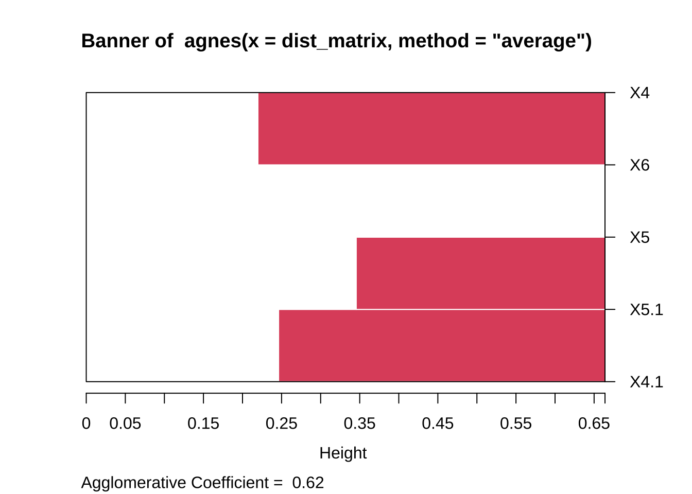
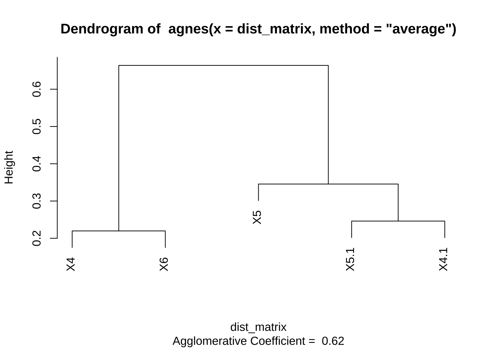
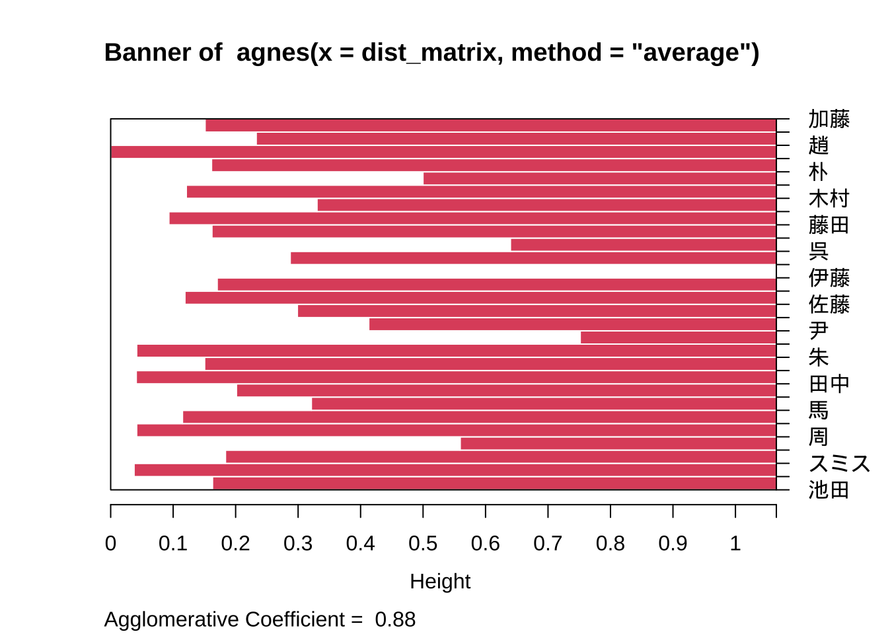
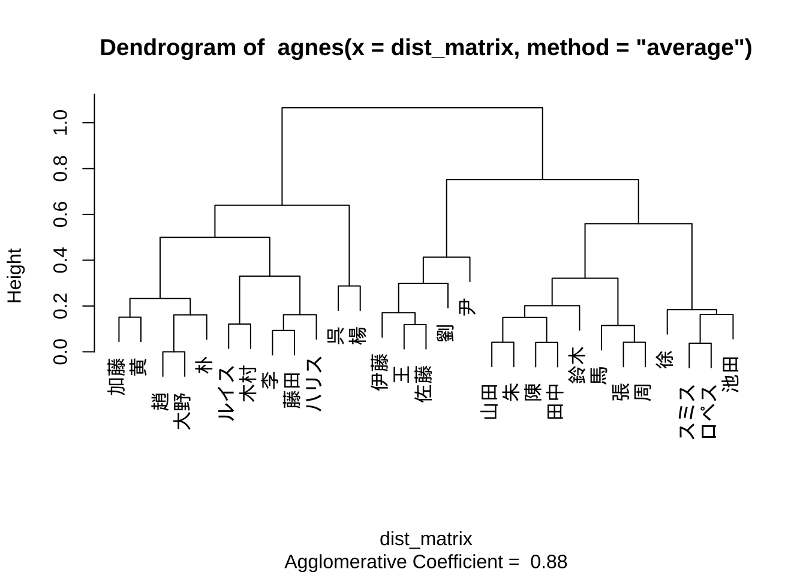
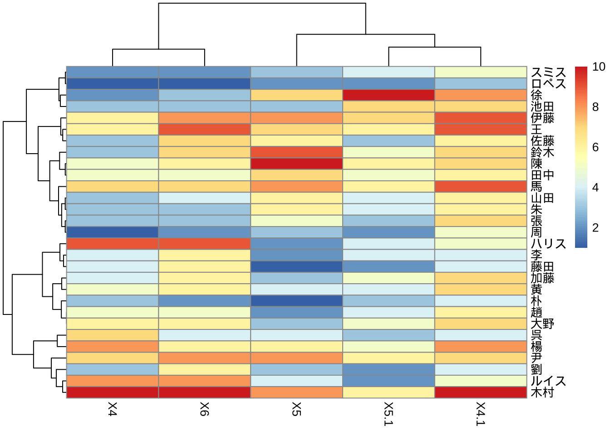
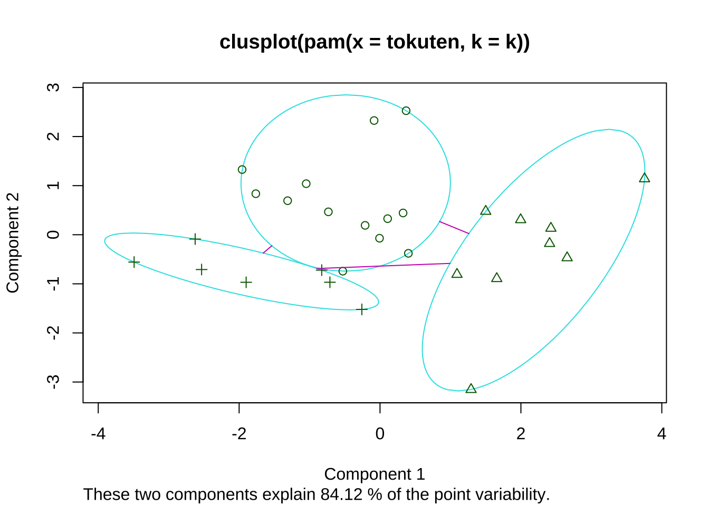
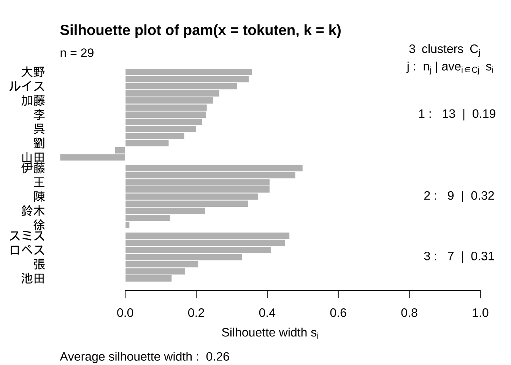

11 クラスター分析
11.1 基本操作
クラスター分析の基本操作を学ぶため, 主成分分析の章でも使用した, 従業員スキル評価データ \((n=9,p=5)\) をここでも使用する.
tokuten <- read.csv("testdat_eng.csv", skip = 1, header = T, row.names = 1)
# tokuten <- read.csv("testdat_jap.csv", skip = 1, header = T, row.names = 1)階層型クラスタリング
階層型クラスタリングは, Rの標準パッケージの一つstatsに含まれる
関数hclust()を用いて実行することができる.
hclust()への入力として, クラスタリング対象間の距離行列を与える必要がある.
もし入力データセット (tokuten) の個体間 (行) のクラスタリングを行うのであれば
そのまま関数dist()を適用すれば良い. 一方, 変数間 (列) のクラスタリングであれば,
一旦データセットを転置 (行と列の入れ替え) する必要がある.
tokuten_dist <- dist(tokuten)
# method = "binary", "canberra", "maximum", "manhattan"
# 距離行列
round(tokuten_dist, 2)
#> yamada suzuki tanaka nakamura ohno Matsui takagi miura
#> suzuki 9.54
#> tanaka 25.96 27.55
#> nakamura 31.91 35.03 9.27
#> ohno 38.65 41.00 28.21 26.19
#> Matsui 27.50 29.98 11.22 10.10 20.00
#> takagi 18.52 21.73 13.82 18.14 23.13 12.04
#> miura 30.66 32.70 12.57 13.93 18.92 13.04 14.39
#> sato 19.72 26.34 17.18 18.30 30.90 16.76 12.41 21.66
# 距離の近い人を集めて、クラスターを形成
# 1:C1 = {tanaka, nakamura}
# 2:C2 = {yamada, suzuki}, or C2 = {C1, matsui} or else??
# --> どちらが優先される?hclust()のデフォルト設定では, 距離尺度はユークリッド距離,
クラスター結合方法は最遠隣法/完全連結法となっている.
# 最遠隣法/完全連結法
(tokuten_hc_1 <- hclust(tokuten_dist)) # method = "complete"
#>
#> Call:
#> hclust(d = tokuten_dist)
#>
#> Cluster method : complete
#> Distance : euclidean
#> Number of objects: 9
#summary(tokuten_hc_1)出力オブジェクトの要素$mergeにクラスター形成過程が格納されている.
# クラスター形成履歴
# マイナス付き => 個体番号. マイナス無し => クラスター番号
tokuten_hc_1$merge
#> [,1] [,2]
#> [1,] -3 -4
#> [2,] -1 -2
#> [3,] -6 1
#> [4,] -7 -9
#> [5,] -8 3
#> [6,] 4 5
#> [7,] -5 6
#> [8,] 2 7また, 出力オブジェクトの要素$heightには, クラスター間の結合が行われる際の距離が格納されている.
# デンドログラム (樹形図) の枝の高さ
tokuten_hc_1$height
#> [1] 9.273618 9.539392 11.224972 12.409674 13.928388 21.656408 30.903074
#> [8] 41.000000このクラスター形成過程と結合距離を使うことでデンドログラムが作成される. デンドログラムは階層的クラスタリングの結果 (クラスターの形成過程) を視覚化するための有効なツールである.

階層クラスタリングを実施しデンドログラムを作成したあと,
cutreeにクラスター数を指定することで,
木を剪定し (細かい枝を切り落とし) て望ましい数のクラスターに絞り込んで,
個体がそれぞれ所属するクラスターに分類することができる.
# 各個体の属するクラスター番号
cutree(tokuten_hc_1, k = 3) # k: クラスター数
#> yamada suzuki tanaka nakamura ohno Matsui takagi miura
#> 1 1 2 2 3 2 2 2
#> sato
#> 2次に, クラスター結合方法の相違によるデンドログラムの形状の違いをみてみよう.
# 代替的手法
(tokuten_hc_2 <- hclust(tokuten_dist, method = "single")) # 最近隣法
#>
#> Call:
#> hclust(d = tokuten_dist, method = "single")
#>
#> Cluster method : single
#> Distance : euclidean
#> Number of objects: 9
(tokuten_hc_3 <- hclust(tokuten_dist, method = "ward.D2")) # ウォード法
#>
#> Call:
#> hclust(d = tokuten_dist, method = "ward.D2")
#>
#> Cluster method : ward.D2
#> Distance : euclidean
#> Number of objects: 9
(tokuten_hc_4 <- hclust(tokuten_dist, method = "average")) # 群平均法
#>
#> Call:
#> hclust(d = tokuten_dist, method = "average")
#>
#> Cluster method : average
#> Distance : euclidean
#> Number of objects: 9
(tokuten_hc_5 <- hclust(tokuten_dist, method = "centroid")) # 中心点法/重心法
#>
#> Call:
#> hclust(d = tokuten_dist, method = "centroid")
#>
#> Cluster method : centroid
#> Distance : euclidean
#> Number of objects: 9
(tokuten_hc_6 <- hclust(tokuten_dist, method = "median")) # メジアン法
#>
#> Call:
#> hclust(d = tokuten_dist, method = "median")
#>
#> Cluster method : median
#> Distance : euclidean
#> Number of objects: 9

距離尺度として中心点法 (重心法) やメジアン法を選択した場合には, 「inversion (逆転) 現象」 の発生が確認される. 「inversion現象」とは、階層的クラスタリングのプロセスにおいて, 本来ならばステップが進むにつれてより”遠く”にあるクラスターと結合していくべきところ, 実際にはより”近く”のクラスターが後に統合されるという状況を指す. すなわち, 結合の順序が距離に関する単調性を失い, 距離の近い順に結合するという直感的な (本来あるべき) 順序に反する状態であり, クラスタリングがうまくいっていないことを示す.
この現象が生じた場合には, 異なる距離尺度や統合方法を検討する必要がある.
k-means法
非階層型クラスタリングの主要な方法であるk-means法は,
Rの標準パッケージの一つstatsに含まれる
関数kmeans()を用いて実行することができる.
# k-means法
(tokuten_hc_k <- kmeans(tokuten, 3))
#> K-means clustering with 3 clusters of sizes 2, 1, 6
#>
#> Cluster means:
#> Expertise Analytics Leadership Presentation Communication
#> 1 82.50000 85.00000 67.50000 66.50000 65.0
#> 2 88.00000 85.00000 85.00000 90.00000 91.0
#> 3 75.33333 75.66667 80.16667 78.66667 79.5
#>
#> Clustering vector:
#> yamada suzuki tanaka nakamura ohno Matsui takagi miura
#> 1 1 3 3 2 3 3 3
#> sato
#> 3
#>
#> Within cluster sum of squares by cluster:
#> [1] 45.5000 0.0000 540.3333
#> (between_SS / total_SS = 72.9 %)
#>
#> Available components:
#>
#> [1] "cluster" "centers" "totss" "withinss" "tot.withinss"
#> [6] "betweenss" "size" "iter" "ifault"
tokuten_hc_k$cluster
#> yamada suzuki tanaka nakamura ohno Matsui takagi miura
#> 1 1 3 3 2 3 3 3
#> sato
#> 3
(tokuten_hc_k <- kmeans(tokuten, 2))
#> K-means clustering with 2 clusters of sizes 7, 2
#>
#> Cluster means:
#> Expertise Analytics Leadership Presentation Communication
#> 1 77.14286 77 80.85714 80.28571 81.14286
#> 2 82.50000 85 67.50000 66.50000 65.00000
#>
#> Clustering vector:
#> yamada suzuki tanaka nakamura ohno Matsui takagi miura
#> 2 2 1 1 1 1 1 1
#> sato
#> 1
#>
#> Within cluster sum of squares by cluster:
#> [1] 996.0 45.5
#> (between_SS / total_SS = 51.9 %)
#>
#> Available components:
#>
#> [1] "cluster" "centers" "totss" "withinss" "tot.withinss"
#> [6] "betweenss" "size" "iter" "ifault"
tokuten_hc_k$cluster
#> yamada suzuki tanaka nakamura ohno Matsui takagi miura
#> 2 2 1 1 1 1 1 1
#> sato
#> 1変数に対するクラスタリング
tokuten_dist3 <- dist(t(tokuten))
tokuten_hc3 <- hclust(tokuten_dist3, method = "ward.D2")
tokuten_hc3$merge # クラスター形成履歴
#> [,1] [,2]
#> [1,] -3 -5
#> [2,] -4 1
#> [3,] -1 -2
#> [4,] 2 3
tokuten_hc3$height # デンドログラム(樹形図)の枝の高さ
#> [1] 12.20656 14.61734 19.74842 44.74967
par(mfrow = c(1, 2)); plot(tokuten_hc3); plot(tokuten_hc3, hang = -1) # デンドログラム
11.2 データ分析例
データセット (1): ワイン品質データ (再掲)
回帰木で使用したワイン品質データを使用する.
ここでは, 回帰問題において目的変数であったワイン品質quality
は除き, ワインの化学的特性を表す11の変数のみを用いて,
白ワインのデータセットをクラスター分類することを試みる.
- winequality-white.csv
- fixed acidity: 酢酸濃度
- volitle acidity: 揮発酸濃度
- citric acidity: クエン酸濃度
- chlorides: 塩化物
- sulfur dioxide: 二酸化硫黄
- sulphate: 硫酸塩
- fixed acidity: 酒石酸含有量（g/dm3)
- volatile acidity: 酢酸含有量（g/dm3)
- citric acid: クエン酸含有量（g/dm3)
- residual sugar: 残留糖分含有量（g/dm3）
- chlorides: 塩化ナトリウム含有量（g/dm3)
- free sulfur dioxide: 遊離亜硫酸含有量（mg/dm3）
- total sulfur dioxide: 総亜硫酸含有量（mg/dm3）
- density: 密度（g/dm3)
- pH: pH
- sulphates: 硫酸カリウム含有量（g/dm3）
- alcohol: アルコール度数（% vol.）
- quality: ワインの品質 (0 (very bad) -- 10 (excellent))winedat <- read.csv("winequality-white.csv", sep = ";", skip = 1, header = T)
wine <- winedat[, -12] # qualityを除く
wine_s <- scale(wine) # 標準化レコードのクラスタリング
個別のワイン (行) を, 11個の化学的特性 (列) に関する類似性によりクラスタリングする.
#wine_dist <- dist(wine)
wine_dist <- dist(wine_s)
# method = "binary", "canberra", "maximum", "manhattan"
(wine_hc <- hclust(wine_dist, method = "ward.D2")) # ウォード法
#>
#> Call:
#> hclust(d = wine_dist, method = "ward.D2")
#>
#> Cluster method : ward.D2
#> Distance : euclidean
#> Number of objects: 4898
plot(wine_hc, labels = F, main = "wineデータ (標準化後): レコードのクラスタリング\nEuclidean + Ward",
family = "HiraKakuProN-W3");
#plot(wine_hc, labels=F, main="wineデータ (標準化前): レコードのクラスタリング\nEuclidean + Ward")
# 指定したクラスター数kで, デンドログラムを切断
rect.hclust(wine_hc, k = 5, border = "red")
rect.hclust(wine_hc, k = 9, border = "blue")
変数のクラスタリング
11個の化学的特性 (列) を, ワインに関する類似性によりクラスタリングする.
#wine_dist <- dist(t(wine))
wine_dist <- dist(t(wine_s))
(wine_hc <- hclust(wine_dist, method = "ward.D2")) # ウォード法
#>
#> Call:
#> hclust(d = wine_dist, method = "ward.D2")
#>
#> Cluster method : ward.D2
#> Distance : euclidean
#> Number of objects: 11
plot(wine_hc, main = "wineデータ (標準化後): 変数のクラスタリング\nEuclidean + Ward",
family = "HiraKakuProN-W3")
- クラスター間距離による結果の相違
(wine_hc <- hclust(wine_dist, method = "complete"))
#>
#> Call:
#> hclust(d = wine_dist, method = "complete")
#>
#> Cluster method : complete
#> Distance : euclidean
#> Number of objects: 11
plot(wine_hc,
main = "wineデータ (標準化後): レコードのクラスタリング\nEuclidean + complete",
family = "HiraKakuProN-W3")
(wine_hc <- hclust(wine_dist, method = "single"))
#>
#> Call:
#> hclust(d = wine_dist, method = "single")
#>
#> Cluster method : single
#> Distance : euclidean
#> Number of objects: 11
plot(wine_hc,
main = "wineデータ (標準化後): レコードのクラスタリング\nEuclidean + single",
family = "HiraKakuProN-W3")
(wine_hc <- hclust(wine_dist, method = "average"))
#>
#> Call:
#> hclust(d = wine_dist, method = "average")
#>
#> Cluster method : average
#> Distance : euclidean
#> Number of objects: 11
plot(wine_hc,
main = "wineデータ (標準化後): レコードのクラスタリング\nEuclidean + average",
family = "HiraKakuProN-W3")
(wine_hc <- hclust(wine_dist, method = "centroid"))
#>
#> Call:
#> hclust(d = wine_dist, method = "centroid")
#>
#> Cluster method : centroid
#> Distance : euclidean
#> Number of objects: 11
plot(wine_hc,
main = "wineデータ (標準化後): レコードのクラスタリング\nEuclidean + centroid",
family = "HiraKakuProN-W3")
重心法 (中心点法)において, inversion現象の発生が確認される.
データセット (2): (ID無し) POSデータ
地方のサービスエリアの売店のレシートデータ500件 (実際のデータに加工を加えた上でランダムにサブセット化. オリジナルの地域・店舗が特定されないように工夫).
"pos_sample500_dist.csv"
- n = 500, p = 16
- 行: レシート (顧客の一回当り購入バスケット)
- 列: "洋菓子土産"〜"デザート類"までの16分類の商品群
- 値: 対応するレシートに含まれる対応する商品の売上個数 (0,1,2,...)階層クラスタリング
16個の商品分類 (列) を, それらの買われ方 (レシートへの反映のされ方) の類似性によって, クラスタリングする.
pos_hc <- hclust(pos_dist, method = "ward.D2")
pos_hc$merge # クラスター形成履歴
#> [,1] [,2]
#> [1,] -9 -10
#> [2,] -6 -13
#> [3,] -7 1
#> [4,] 2 3
#> [5,] -8 4
#> [6,] -3 5
#> [7,] -16 6
#> [8,] -11 7
#> [9,] -5 8
#> [10,] -12 9
#> [11,] -14 10
#> [12,] -4 11
#> [13,] -15 12
#> [14,] -1 13
#> [15,] -2 14
pos_hc$height # デンドログラム(樹形図)の高さ
#> [1] 7.280110 8.062258 8.103497 8.644844 9.014803 9.549370 9.702724
#> [8] 10.785793 12.548572 13.754999 15.099669 18.753461 30.374223 41.487118
#> [15] 65.724108
plot(pos_hc, hang = -1, family = "HiraKakuProN-W3")
デンドログラム内に「chaining現象」が発生していることが分かる.
「chaining現象」は, クラスターが連鎖的に長く伸びる形で形成される現象を指す. この現象は, 階層クラスタリングの過程で, 一つのクラスターが次々に近くのデータ点を吸収して成長していくことで生する.
chaining現象は, 特に, 単連結法で生じやすいと考えられる. 本来異なるクラスターに属すべきデータポイントが, 同一のクラスターに統合されてしまうことで, データの真の構造を見落としてしまう可能性がある. 対処法として, クラスター間の結合方法を変える (単連結法から他の方法) ことでchaining現象の影響を軽減できる場合がある. また, 距離尺度を変更することで軽減できる場合がある.
このposデータの取る値は, 各レシートごとの商品群の購買個数を表している. 同時購買されやすい・されにくいが商品群間の距離に反映されてしまっている. ここでは, データに加工を施し, 値が購買個数 (頻度) → 購買有無 (0/1)に変換してみる.
posdat2 <- posdat
posdat2[posdat2>= 2] <- 1
pos_dist2 <- dist(t(posdat2))
#
pos_hc2 <- hclust(pos_dist2, method = "ward.D2")
pos_hc2$merge # クラスター形成履歴
#> [,1] [,2]
#> [1,] -7 -9
#> [2,] -10 1
#> [3,] -16 2
#> [4,] -3 -13
#> [5,] 3 4
#> [6,] -6 5
#> [7,] -5 6
#> [8,] -11 -14
#> [9,] -8 7
#> [10,] 8 9
#> [11,] -12 10
#> [12,] -4 11
#> [13,] -1 -2
#> [14,] -15 12
#> [15,] 13 14
pos_hc2$height # デンドログラム(樹形図)の高さ
#> [1] 4.472136 4.760952 4.983305 5.099020 5.369668 5.550633 6.989788
#> [8] 7.348469 7.348469 8.011356 9.468448 9.536032 15.874508 16.016132
#> [15] 20.502178
plot(pos_hc2, hang = -1, family = "HiraKakuProN-W3")
更新されたデンドログラムより, chainingが緩和されたのが確認される.
次に, 距離尺度およびクラスター結合方法の変更を試みる. ここでは, 距離尺度としてコサイン距離を, クラスター結合方法としてウォード法を採用する.
# マンハッタン距離
#pos_dist <- dist(t(posdat), method = "manhattan")
# cosine距離の使用
library(proxy)
pos_dist <- proxy::dist(t(posdat), method = "cosine") # cosine距離
pos_hc <- hclust(pos_dist, method = "ward.D2")
plot(pos_hc, hang = -1, family = "HiraKakuProN-W3")
pos_dist2 <- proxy::dist(t(posdat2), method = "cosine") # cosine距離
pos_hc2 <- hclust(pos_dist2, method = "ward.D2")
plot(pos_hc2, hang = -1, family = "HiraKakuProN-W3")
以上, データ間の距離やクラスター結合方法の選択が結果に大きく影響することが確認される.
Hartiganルールによるクラスター数Kの決定
Hartiganルールでは, (k+1)番目のクラスターを加えるか否かの判定を逐次行い, 最適なクラスター数\(K\)を決定する.
library(useful)
## pos_km <- FitKMeans(posdat, max.cluster = 20, seed = 1) # 客
pos_km_item <- FitKMeans(t(posdat), seed = 1) # 商品
pos_km_item
#> Clusters Hartigan AddCluster
#> 1 2 14.359657 TRUE
#> 2 3 8.985054 FALSE
#> 3 4 7.062050 FALSE
#> 4 5 3.181427 FALSE
#> 5 6 2.307692 FALSE
#> 6 7 2.131698 FALSE
#> 7 8 1.964241 FALSE
#> 8 9 1.112276 FALSE
#> 9 10 1.706499 FALSE
#> 10 11 1.190476 FALSE
#> 11 12 1.142857 FALSE
# (クラスター数, Hartigan数, クラスターを追加するべきか否か)
PlotHartigan(pos_km_item) # 閾値=10(デフォルト)
上記出力より, クラスター数\(K=2\)が選択される.
次元縮約 → 顧客 (レシート) のクラスタリング
つぎに, 顧客 (レシート) のクラスタリングを行う. 変数の次元が大きい場合には, クラスタリングの実行に先立って, 類似性を測る変数の次元を落とすのが効果的なことが多い. 本データセットの商品分類数 (16) は大きいとは言えないが, 手順例を紹介する. ここでは, PCAによる次元縮約によって 事前に5つに絞り込んでおく. (なお, “超高次元”の場合には, 通常のPCAはうまく機能しないことが 理論的に示されているため, 別途対応が必要となる.)
# 変数(商品)に関して次元縮約pca実行
#posdat_pc <- prcomp(posdat)
posdat_pc <- prcomp(posdat, scale. = T) # 標準化
summary(posdat_pc)
#> Importance of components:
#> PC1 PC2 PC3 PC4 PC5 PC6 PC7
#> Standard deviation 1.26384 1.22037 1.10340 1.07873 1.03901 1.0245 0.99523
#> Proportion of Variance 0.09983 0.09308 0.07609 0.07273 0.06747 0.0656 0.06191
#> Cumulative Proportion 0.09983 0.19291 0.26901 0.34174 0.40921 0.4748 0.53672
#> PC8 PC9 PC10 PC11 PC12 PC13 PC14
#> Standard deviation 0.9911 0.9847 0.96511 0.93339 0.91726 0.89735 0.8772
#> Proportion of Variance 0.0614 0.0606 0.05821 0.05445 0.05259 0.05033 0.0481
#> Cumulative Proportion 0.5981 0.6587 0.71693 0.77138 0.82397 0.87430 0.9224
#> PC15 PC16
#> Standard deviation 0.8070 0.76844
#> Proportion of Variance 0.0407 0.03691
#> Cumulative Proportion 0.9631 1.00000
plot(posdat_pc, family = "HiraKakuProN-W3")
posdat_score5 <- posdat_pc$x[, 1:5]
posdat_pc$rotation[, 1:5]
#> PC1 PC2 PC3 PC4 PC5
#> 洋菓子土産 0.19801045 -0.41680964 0.07830286 0.204893941 -0.15189427
#> 和菓子土産 0.31926545 -0.17429488 0.29451622 0.024368667 0.06823826
#> 地域限定菓子 0.11093983 -0.21464500 0.08853735 0.122379290 -0.51464240
#> 水産加工品 0.38402139 0.47345139 0.12406842 -0.018704524 0.05301032
#> 地元名産品 0.28312609 0.25920695 0.07566671 -0.432182990 -0.21885500
#> 畜産加工品 0.31510689 0.36152933 0.04970947 0.404289871 -0.10659114
#> 農産加工品 0.14914158 -0.03604771 0.16126513 -0.142280575 0.30221851
#> ご当地グロッサリー 0.20348286 0.20049364 0.03892426 0.150258935 0.38320847
#> 玩具土産 -0.18783969 0.06869904 0.48245433 0.205983425 -0.07184299
#> 雑貨土産 -0.08771897 0.09893981 0.46577309 0.185847154 0.18455564
#> 雑貨類 -0.13980819 0.13804035 -0.38617293 0.166604346 0.17361526
#> 菓子類 -0.33688987 0.10484451 0.32900498 0.001601135 -0.21715666
#> 麺類 0.21239584 0.14992291 -0.10107137 0.106430151 -0.49276377
#> パン.弁当類 -0.14576690 0.29113765 -0.32482427 0.311169546 -0.14077896
#> 飲料 -0.46157964 0.32927414 0.15896997 -0.041046373 -0.11399644
#> デザート等 -0.02334359 0.16142448 0.01003826 -0.578340358 -0.12251255
posdat_dist5 <- dist(posdat_score5) # レコード間
#posdat_dist5 <- dist(t(posdat_score5)) # 合成変数間
posdat_hc5 <- hclust(posdat_dist5, method = "ward.D2")
plot(posdat_hc5, family = "HiraKakuProN-W3")
rect.hclust(posdat_hc5, k = 8, border = "blue")
上では, 顧客 (レシート) に対して階層クラスタリングを実施したが, 件数の多い場合には, 注意が必要である. 主な問題点は計算コストと可視化の困難さである. 階層的クラスタリングにおいて, データ点の数が非常に多い場合, 計算時間やメモリ消費が膨大になる可能性がある (全てのデータ点間で距離を計算し, これらの距離に基づいて段階的にクラスターを形成する必要性) . また, データポイントの数が多い場合、デンドログラムは非常に密集してしまい、個々のクラスターやクラスタリングの構造を解釈することが困難で, 有益な情報を得られにくくなる.
11.3 発展的なクラスター分析
先に使用した従業員評価データ (拡張版) をここでも使用する. 距離としては, 相関係数 (類似度) をベースにしたcosine距離 (=1-相関係数) を使用する.
関数agnes
パッケージcluster内にある関数agnes (AGglomerative NESting) を使うことで, 階層型クラスタリングをより高度に制御しながら実行することが可能.
library(cluster)
dist_matrix <- as.dist(1 - cor(tokuten))
res_agnes <- agnes(dist_matrix, method = "average")
plot(res_agnes)
dist_matrix <- as.dist(1 - cor(t(tokuten)))
res_agnes <- agnes(dist_matrix, method = "average")
plot(res_agnes)
関数pheatmap
パッケージpheatmapは, 主にヒートマップの作成に使用されるが, 相関に基づく階層型クラスタリングを行い, ヒートマップとして可視化する機能もあり. 遺伝子発現データなどのbioinformatics分野で活用.
library(pheatmap)
pheatmap(tokuten,
clustering_distance_rows = as.dist(1 - cor(t(tokuten))),
clustering_distance_cols = as.dist(1 - cor(tokuten)))
関数pam
メドイド (medoid) は, クラスタ内の全ての点に対する距離の合計が最小となるような, クラスタ内に存在するデータ点であり, K-medoids法は, メドイドを中心としてクラスタリングを行う手法である. PAM (Partitioning Around Medoids) は, K-medoids法の考え方を実装した具体的アルゴリズムの一種である.
Rでは, パッケージcluster内の関数pamを使用することができる.
一方, K-medoids法に類似したクラスタリング手法として, K-median法がある. K-median法は, 各クラスタ内のデータポイントの中央値に基づいて「中央点」決定し, クラスタ内の全データポイントと「中央点」との距離の合計を最小化するようにクラスタリングを行う.
これらの手法を使うことで, 外れ値に強い, ロバストなクラスタリング結果が得られる.
# pam関数によるK-medoids法の実行
k <- 3 # クラスタの数
res_pam <- pam(tokuten, k)
print(res_pam)
#> Medoids:
#> ID X4 X6 X5 X5.1 X4.1
#> 黄 21 5 6 4 4 7
#> 馬 5 7 7 8 6 9
#> スミス 14 2 2 3 4 5
#> Clustering vector:
#> 加藤 伊藤 山田 鈴木 馬 王 劉 趙 呉 尹 佐藤
#> 1 2 1 2 2 2 1 1 1 2 1
#> ルイス 徐 スミス 木村 大野 ロペス 陳 李 張 黄 朴
#> 1 2 3 2 1 3 2 1 3 1 3
#> 池田 藤田 周 ハリス 田中 朱 楊
#> 3 1 3 1 1 3 2
#> Objective function:
#> build swap
#> 3.17531 3.17531
#>
#> Available components:
#> [1] "medoids" "id.med" "clustering" "objective" "isolation"
#> [6] "clusinfo" "silinfo" "diss" "call" "data"
plot(res_pam)